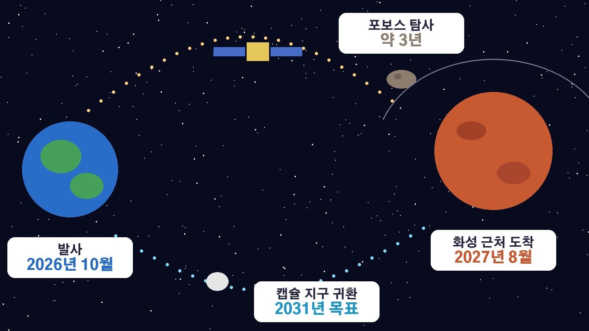

일본 탐사선 MMX가 화성 위성 포보스로 출발, 2031년 모래를 싣고 돌아오면 세계 처음이 되는 이유와 5년 일정
20일 새벽 일본에서 화성 쪽으로 떠난 탐사선 소식 보셨나요. 화성 탐사라고 하면 보통 붉은 행성 표면을 달리는 로봇을 떠올리는데, 이번에는 화성 곁을 도는 작은 위성에서 모래를 퍼 와서 지구로 가져오겠다는 계획이에요. 무엇을 하러 갔는지, 왜 세계 처음이라는 말이 붙는지, 앞으로 언제 무슨 일이 이어지는지 순서대로 정리해 볼게요.
20일 새벽 발사 성공, MMX는 어떤 탐사선인가
일본우주항공연구개발기구는 20일 오전 4시 41분 가고시마현 다네가시마 우주센터에서 화성 위성 탐사선 MMX를 실은 H3 로켓 10호기를 쏘아 올렸습니다. 로켓은 보조로켓 4개와 1단을 차례로 떼어 내며 고도를 높였고, 발사 약 1시간 11분 뒤 탐사선이 로켓에서 분리돼 화성으로 향하는 궤도에 들어섰어요. 일본우주항공연구개발기구도 계획대로 비행해 정상적으로 분리하고 궤도에 투입한 것을 확인했다고 발표했습니다.
MMX의 임무는 화성의 위성 포보스에서 모래 같은 시료를 채취해 지구로 가져오는 것이에요. 이런 임무를 시료 귀환이라고 부릅니다. 성공하면 화성권 천체에서 시료를 가져온 첫 사례가 돼요. 이번 탐사선 무게는 4480킬로그램으로 일본 탐사선 가운데 가장 무거웠다고 합니다.
포보스는 어떤 곳이고 왜 그 모래가 중요할까
포보스는 화성을 도는 두 위성 가운데 하나로, 감자처럼 울퉁불퉁하게 생겼어요. 지름은 20에서 30킬로미터 정도로 달의 100분의 1에도 못 미치는 아주 작은 위성입니다. 이름은 그리스 신화 속 전쟁의 신 아레스의 아들에서 따왔고 공포라는 뜻이에요.
이 작은 위성이 어디서 왔는지를 두고는 두 가지 설이 맞서 있습니다. 근처를 지나던 소행성이 화성 중력에 붙잡혔다는 설, 그리고 다른 천체가 화성과 부딪히면서 흩어진 파편이 뭉쳐 생겼다는 설이에요. 포보스 표면에는 화성에서 날아온 먼지가 쌓여 있어서, 가져온 시료에 화성 토양이 조금 섞여 있을 가능성도 있다고 합니다. 시료를 정밀하게 분석하면 화성 위성의 기원을 밝히는 데 도움이 되고, 화성 토양의 성분을 알아내면 앞으로 화성 거주 연구에도 쓰일 수 있다는 기대가 나와요.
2027년 도착부터 2031년 귀환까지 일정
MMX는 2027년 8월쯤 화성 근처에 도착해 약 3년 동안 포보스를 탐사할 계획입니다. 멀리서 포보스를 관측한 뒤 작은 탐사 로봇 차량을 표면에 내려보내고, 탐사선이 직접 포보스에 내려앉아 로봇팔로 시료를 채취하는 순서예요. 유럽우주국은 채취 목표량을 10그램 이상으로 소개했습니다.

돌아오는 길에는 화성의 또 다른 위성 데이모스 근처를 지나며 관측도 합니다. 시료를 담은 캡슐은 2031년 호주 사막에 떨어뜨릴 예정이에요. 이 임무는 일본이 이끌고 미국항공우주국, 프랑스와 독일의 우주기관, 유럽우주국이 함께 참여하고 있고, 가져온 시료는 협력 기관의 과학자들에게도 나눠질 예정입니다.
하야부사의 경험, 그리고 앞서 실패한 도전
일본이 이 임무에 도전할 수 있는 바탕에는 소행성 탐사선 하야부사와 그 뒤를 이은 하야부사2를 통해 쌓아 온 시료 귀환 기술이 있어요. 소행성에서 다져 온 기술을 이번에는 화성 곁의 위성에 적용하는 셈입니다. 탐사에 성공하면 일본이 강점을 가진 우주 탐사 분야에서 국제적인 존재감을 높일 계기가 될 것이라는 기대도 나와요.
화성 위성이 아직 베일에 싸여 있는 데는 이유가 있어요. 러시아도 2011년 포보스 탐사에 나섰지만 실패했습니다. 그만큼 이번 MMX가 계획대로 시료를 가져온다면 화성 위성의 물질을 지구로 가져온 첫 사례가 되는 거예요.
H3 로켓 10호기 성공이 갖는 의미
이번 발사는 일본의 차세대 주력 로켓 H3에도 의미가 큽니다. H3는 일본우주항공연구개발기구와 미쓰비시중공업이 함께 개발했고, 개발비로 약 553억 엔이 들었어요. 2023년 첫 발사에서 실패한 뒤 5번 연속 성공했지만 2025년 12월에 다시 실패를 겪었고, 올해 6월 발사를 재개한 뒤로 성공을 이어 가고 있습니다. 이번 성공으로 누적 발사 성공률은 78퍼센트에서 80퍼센트로 올랐어요.
니혼게이자이신문은 문부과학성과 일본우주항공연구개발기구가 발사 업무까지 미쓰비시중공업에 넘기는 방안을 협의할 예정이라고 보도했습니다. 문부과학성은 이를 통해 1회 100억 엔 수준인 발사 비용을 절반으로 낮출 수 있다고 보고 있어요. 정리하면 다음 확인할 시점은 2027년 8월 화성 도착, 그리고 2031년 캡슐 귀환입니다. 그 사이에는 포보스 관측과 착륙, 시료 채취가 차례로 이어집니다.
참고한 기사: 서울경제 일본 화성 탐사선 발사 성공 모래 채취 세계 첫 도전 2026년 10월 20일, KBS 화성의 위성에서 모래 갖고 올게 일본 탐사기 MMX 5년 여정 시작 2026년 10월 20일, 뉴스핌 일본 화성 탐사선 발사 성공 시료 채취해 지구 귀환 목표 2026년 10월 20일, 머니투데이 검색폭발 이슈키워드 포보스 2026년 10월 20일, 일본우주항공연구개발기구 H3 로켓 10호기 화성 위성 탐사기 발사 결과 2026년 10월 20일, 유럽우주국 MMX 임무 소개 2026년 10월
태그
MMX 포보스 화성위성 화성탐사 시료귀환 일본우주항공연구개발기구 H3로켓 하야부사 우주탐사 다네가시마